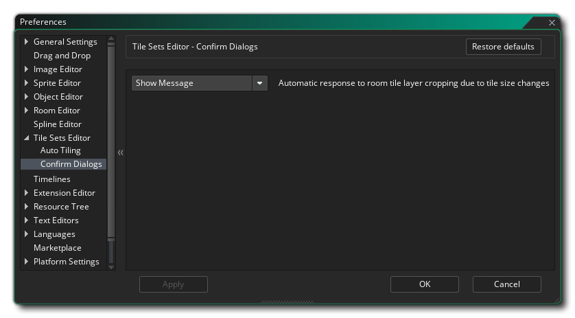

Les préférences de l' éditeur de sprites sont utilisées pour définir la manière dont l' éditeur de mosaïque ressemble et fonctionne. L'option suivante existe pour la mosaïque automatique:
- La couleur d'arrière-plan à afficher derrière les vignettes d'autosurveillance: Cette option définit la couleur d'arrière-plan dans l'éditeur d'ensemble de vignettes dans la section de création de vignettes automatiques. La couleur par défaut est (rgba) #808080FF.
Les préférences de l'éditeur de jeu de carreaux comportent également une sous-section Confirmer les boîtes de dialogue: 
L'option disponible ici contrôle le message qui apparaît lorsque vous changez la taille de la cellule du jeu de tuiles et cela affecte la façon dont les couches de tilemap de la pièce sont rendues (ce qui entraîne des calques rognés). Par défaut, il vous sera demandé de continuer ou d'annuler l'opération, et cette option vous permet de supprimer ce message en sélectionnant "OK" qui va aller de l'avant avec le changement de cellule, indépendamment de l'impact sur les couches de tilemap. La valeur par défaut est "Afficher le message".